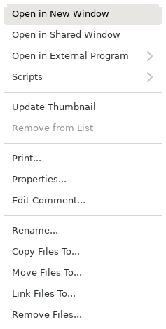
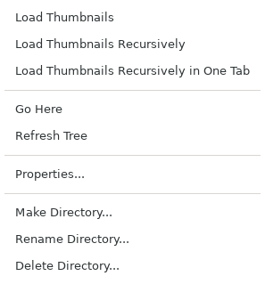
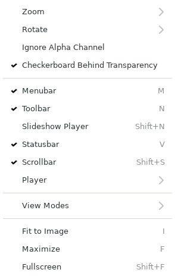

This section describes the menus shown with a mouse button (mouse menus). With the default settings they are shown by pressing the right button. The assignment can be changed on the "Mouse Buttons" pages of the preferences (section 6). For items that are also in the menu bar, see also section 3.

The mouse menu of the thumbnail view (shown on an image file)
The mouse menu of the thumbnail view. When several files are selected, it applies to all selected images.
- Open
-
Exists only when the menu is shown on a directory or an archive. Opens the thumbnails of that directory or archive.
- Open in New Window
-
Opens the selected images, each in a new image window. When several are selected, that many image windows are created.
- Open in Shared Window
-
Opens the image in the shared image window. When there is no shared image window yet, it is created; otherwise it is reused. This command cannot be used when more than one file is selected.
- Open in External Program
-
Passes the selected files to a registered external program. For the list of external programs see 6.10.
- Scripts
-
Passes the selected files to a registered script. For the settings of scripts see 6.10.1.
- Update Thumbnail
-
Creates the thumbnails of the selected images again.
- Remove from List
-
This command works only in collection tabs.
Removes the files from the list. The files themselves are not deleted.
- Print...
-
Prints the selected images. The same as [File | Print...].
- Properties...
-
Shows the properties of the file. The permissions and the owner of the file can be changed.
- Scan EXIF Data...
-
Exists when built with EXIF support. Shows the EXIF data of the image.
- Edit Comment...
-
Edits the comment.
- Rename... / Copy Files To... / Move Files To... / Link Files To... / Remove Files...
-
The same as the items of the [Edit] menu.

The mouse menu of the tabs (one tab)
Right-clicking the tabs shows the list of the tabs. It can be used to move to any tab.
It is useful when many tabs were created, for example by reading directories recursively.

The mouse menu of the directory view
Only one directory can be selected in the directory view, so the commands always apply to the directory under the mouse cursor.
- Load Thumbnails
-
Reads the directory under the cursor and shows it in the thumbnail view. The first time, a new tab is created; when it was already read, its tab becomes active.
- Load Thumbnails Recursively
-
Reads the directory under the cursor and everything below it. A tab is created for each directory.
- Load Thumbnails Recursively in One Tab
-
Reads the directory under the cursor and everything below it, and shows all images in one tab.
- Go Here
-
Makes the directory under the cursor the top of the directory view.
- Refresh Tree
-
Refreshes the directory view. Used to show directories created, moved or deleted from the command line.
- Properties...
-
Shows the properties of the directory. The permissions and the owner can be changed.
- Make Directory...
-
Creates a new directory in the directory under the cursor.
- Rename Directory...
-
Renames the directory under the cursor.
- Delete Directory...
-
Deletes the directory under the cursor after a confirmation dialog.
The mouse menu of the preview has Zoom, Rotate, Ignore Alpha Channel, Checkerboard Behind Transparency, Movie, View Modes, Show Scrollbar [Shift + S], Create Thumbnail [Shift + T], Memory Buffer [Ctrl + B] and Print.... Each item is the same as the item in the menus of the image window (3.1 to 3.3, 3.8).

The mouse menu of the image view in the image window
The mouse menu of the image view in the image window is the same as the [View] menu of the image window (3.3).